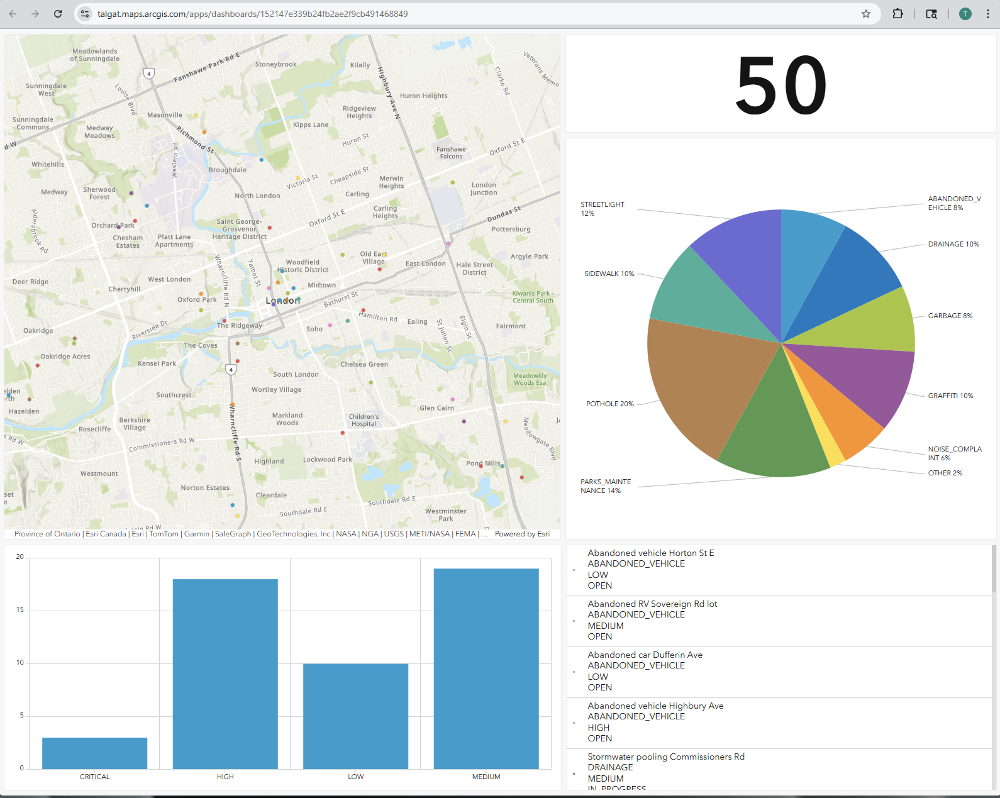
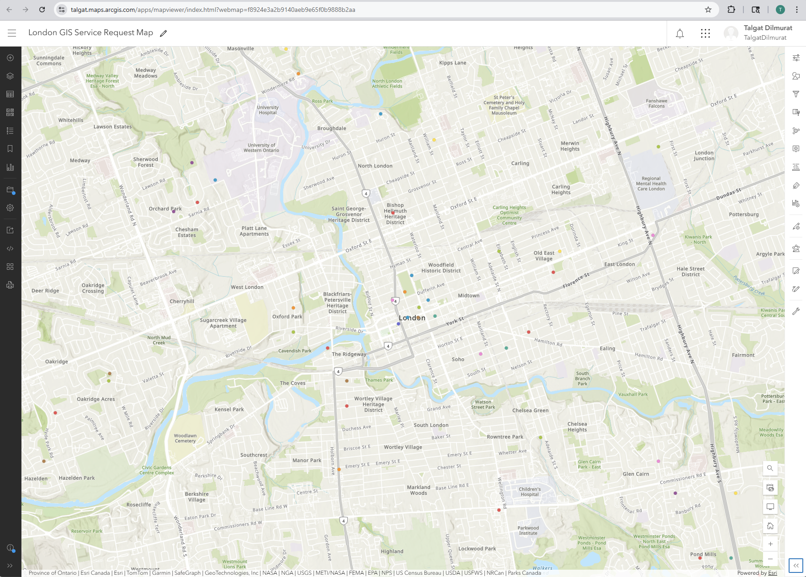

London, Ontario
GIS, Systems, and the work between them
Software Engineering graduate building toward municipal systems work
focus : spatial data · process · the seam between systems and people
About
Software Engineering Technology graduate now focused on GIS and business systems analysis. I'm drawn to the space where data becomes decision-making — where a clean schema or a well-mapped workflow quietly changes how an organization works.
Before tech, the path took its time. I studied linguistics, taught languages, and worked as a certified interpreter. I ran a small e-commerce business. I worked in marketing operations and nonprofit administration. The range is the point — I can move between technical and non-technical contexts without losing either side.
Projects
Earlier Work — Municipal Services Portfolio
8-endpoint Spring Boot REST API for managing municipal service requests — potholes, streetlights, graffiti, drainage. Full CRUD with status filtering, keyword search, and an analytics summary endpoint. Runs on Java 17, Spring Data JPA, Hibernate 6, and H2 in development with MySQL production config included. Demonstrates production-ready backend design — built to plug directly into a GIS frontend or CRM system.
Normalized MySQL schema for a full service request system — 6 tables with foreign keys, indexes, and a status history audit trail. Includes realistic seed data covering London ON wards and departments, plus analytical queries for resolution time, volume by type, and SLA compliance reporting. Queries surface average resolution time, SLA breach rates, and ward-level volume — the kind of reporting a GIS analyst actually hands to a manager.
Interactive map of 50 simulated 311 service requests across London, Ontario — published as an ArcGIS Online hosted feature layer and styled by issue type (road, water, parks, bylaw, transit). Also includes a Leaflet.js browser version loading directly from CSV with no backend required. Live and publicly accessible — raw CSV turned into a queryable spatial layer anyone can open in a browser.
Business systems case study on London's 311 service request process — current-state mapping, root cause analysis of 7 key pain points (18% duplicate rate, 2-day triage delay, no citizen status visibility), and a redesigned workflow with automated triage rules, 4-tier SLA escalation, and functional requirements specification. The proposed redesign cuts estimated triage time from 2 days to under 4 hours.
C# / ASP.NET Core
Three full-stack applications built with ASP.NET Core MVC, Entity Framework Core, and SQL Server — each with its own dashboard, CRUD workflows, and data model.
GIS Projects
Hosted feature layers, interactive maps, and operational dashboards built with ArcGIS Online — turning raw service request data into spatial insight.

ArcGIS DashboardsLive operational dashboard visualizing 50 simulated 311 service requests — interactive map, total count indicator, issue-type pie chart, priority bar chart, and a searchable request list. Built on a hosted ArcGIS Online feature layer.

ArcGIS Map Viewer50 simulated 311 service requests published as an ArcGIS Online hosted feature layer, styled by issue type with unique symbols. Includes a Leaflet.js browser version loading directly from CSV — no backend required.
ArcGIS Story Maps
Maps built with ArcGIS Story Maps — combining spatial data, layers, and narrative to make geographic information readable and useful.
Short description of the spatial story — what question it answers, what data it uses.
Open in ArcGIS →Short description of the spatial story — what question it answers, what data it uses.
Open in ArcGIS →Short description of the spatial story — what question it answers, what data it uses.
Open in ArcGIS →✏️ Placeholder — send me your Story Map links and titles and I'll fill these in.
Skills
| GIS Stack |
ArcGIS Pro
ArcGIS Online
Leaflet.js
ArcGIS Enterprise
ArcGIS Monitor
Spatial Data
Coordinate Systems
|
| Web Application |
React 18
Node.js
.NET / C#
REST APIs
JSON
OAuth
|
| Data |
SQL
PostgreSQL
MySQL
Relational Modeling
ETL
|
| Systems & Automation |
Python
PowerShell
Git
Jira
Windows Server
IIS
|
| Business Analysis |
Process Mapping
Workflow Documentation
Requirements Gathering
Stakeholder Communication
|
| Programming Foundation |
Java
Spring Boot
Object-Oriented Design
|
Education & Training
| Course | Type |
|---|---|
| ArcGIS Business Analyst Pro Basics | Web Course |
| The Systems Approach to ArcGIS: System Life Cycle | Web Course |
| The Systems Approach to ArcGIS: An Introduction | Web Course |
| Administering ArcGIS Online Content | Web Course |
| Introduction to AI in ArcGIS | Web Course |
| Introduction to Coordinate Systems | Web Course |
| ArcGIS Online Basics | Web Course |
| ArcGIS Pro Basics | Web Course |
| GIS Basics | Web Course |
| Getting Started with Data Management | Web Course |
| Introduction to ArcGIS Monitor | Training Seminar |
Full transcript available on request.
Currently
A running record of what I'm studying and building right now.
Full-stack app: React 18 frontend, Node.js + Express REST API, PostgreSQL database with audit log, interactive Leaflet.js map, AI-assisted triage via the Anthropic API, and a KPI dashboard.
Current-state spatial analysis using City of London open data. Three-tier classification, buffer analysis, gap polygon identification. Methodology, findings, and recommendations report in progress.
Self-directed study on Portal for ArcGIS, ArcGIS Server, licensing, patching, and geodatabases. Building familiarity beyond ArcGIS Online.
Foundational curriculum: ArcGIS Pro, ArcGIS Online, Business Analyst Pro, GIS Basics, Coordinate Systems, Data Management, AI in ArcGIS, Systems Approach to ArcGIS, ArcGIS Monitor.
Three-year program covering databases, APIs, cloud, DevOps, networking, security, enterprise systems, and business analysis.